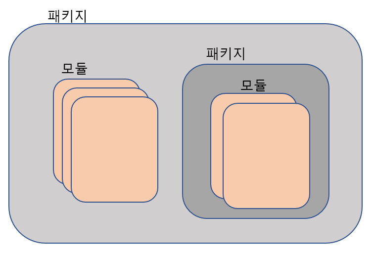

Open College -
From Python Programming
To Web Programming
#Session3 2019/12/06
Created by
Amos Dawn
## TODO * Python * Function * Package & Module
Python GoGo
PyCharm을 켜주세요
## Function * 함수란 입력을 이용하여 정해진 일을 수행한 후, 결과물을 내어주는 것 * 그간 사용했던 print() input() range() 모두 함수!
## Function (Cont.d) * 함수의 선언과 실행 * 재료는 매개변수 혹은 인자 (Parameter) * 결과는 리턴값 (Return value) ``` # a, b 두 개의 재료를 이용하여 더한 값을 리턴한다. def add(a, b): return a + b # add란 함수에 2와 3을 재료로 넣고 그 결과를 result에 저장한다. result = add(2, 3) ```
## Parameter가 없는 함수 * 재료가 없는 함수도 존재 ``` def returnHello(): return "Hello" result = printInfo() ```
### Return value가 없는 함수 * 반환 값이 없는 함수도 존재 ``` def printHello(): print("Hello") printHello() ```
### Return value가 여러개인 함수 * 콤마로 여러개를 Return하면 Tuple이 리턴된다! ``` def multiplyAndDivide(a, b): return a * b, a - b def calc(c, d): return c + d, c - d, c * d, c / d result1, result2 = multiplyAndDivide(1, 2) print(result1) print(result2) result = calc(2, 3) print(typeof(result)) ```
## 함수의 호출 * Parameter의 순서에 맞춰서 * Parameter를 지정해서 ``` def subtract(a, b): return a - b result = subtract(7, 3) result2 = subtract(b = 3, a = 7) ```
### 코딩해보기 * 다음과 같이 계산 type, 두 수를 입력받는 프로그램이 있다. * type은 더하기, 빼기, 곱하기, 나누기가 있다. ``` 계산정보를 입력하세요: 더하기 2 3 계산결과 : 5 ``` * 그러나 바이러스에 걸려 코드의 중요부분이 #TODO로 변경되었다. * 프로그램을 완성하시오. ``` func calc(type, a, b): # TODO a = input("계산정보를 입력하세요: ") # TODO result = calc(type, a, b) print("계산결과 : " + result) ```
### Default Parameter * Parameter에 기본값을 설정할 수 있다! * 호출 시 생략되면 기본값이 이용된다! ``` def add(a, b = 2): return a + b result = add(2, 3) result2 = add(4) ```
### Default Parameter (Cont.d) * 오른쪽의 Parameter부터 설정이 가능하다! * 중간부터는 불가능! ``` # 올바른 예 def func(a, b = 1, c = 2): # 올바르지 않는 예 def func(a, b = 0, c): ```
### 변수의 스코프 * 함수안에서 사용하는 변수를 로컬 변수라 한다. * 함수밖의 변수를 글로벌 변수라 한다. ``` # Global variable a = 2 def printTwo(): # Local variable b = 2 print(b) printTwo() ```
### 변수의 스코프 (Cont.d) * 함수 내의 변수와 글로벌 변수는 전혀 다른 박스다! ``` a = 2 b = 3 def add(a, b): return a + b result = add(3, 5) ```
### 변수의 스코프 (Cont.d) * 함수 내의 변수와 글로벌 변수는 전혀 다른 박스다! ``` a = 2 def changeA(): a = 3 changeA() print(a) ```
### 변수의 스코프 (Cont.d) * 함수내에서 Global Variable을 변경하고 싶다면 global 키워드를 붙이자 ``` a = 2 def changeA(): global a a = 3 changeA() ```
### 코딩해보기 * 다음 프로그램은 입력된 숫자 중 최댓값, 최솟값, 평균값을 출력한다. ``` 숫자들을 입력하세요: 1 5 3 3 최댓값 : 5 최솟값 : 1 평균값 : 3 ``` * 그러나 바이러스에 걸려 코드의 중요부분이 #TODO로 변경되었다.
### 코딩해보기 (Cont.d) * 프로그램을 완성하시오. ``` func calcMax(number_list): # TODO func calcMin(number_list): # TODO func calcAvg(number_list): # TODO numbers = input("숫자들을 입력하세요: ") max_result = calcMax(numbers) min_result = calcMin(numbers) avg_result = #TODO print("최댓값 : " + max_result) print("최솟값 : " + min_result) print("평균값 : " + avg_result) ```
### Module & Package * 다른 프로그램에서 코드를 재사용하기 위하여 책을 만들 수 있음! * 책은 패키지로 구성되며 패키지 안에 모듈이 들어있음! 
### Module car.py ``` car = "람보르기니" def forward(): print("전진합니다.") def reverse(): print("후진합니다.") ``` moduleTest.py ``` import car car.forward() car.reverse() ```
### Module의 사용 ``` import math print(math.ceil(3.14)) print(math.factorial(2)) ```
## Homework 1. * 백준 (https://www.acmicpc.net/) * https://www.acmicpc.net/problem/1152 * 안한 사람들 - 로또게임 작성해보기
## Homework 2. * 점프 투 파이썬 (https://wikidocs.net/book/1) * 04-1 함수 * 04-2 사용자 입력과 출력 * 05-1 클래스 * 05-2 모듈 * 파이썬이 보이는 그림책 * 3장 리스트 4장 제어문 5장 함수
THE END
Is there any questions?
-
amos.doan@gmail.com
-
mossol.net